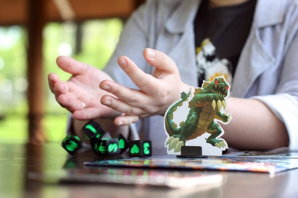
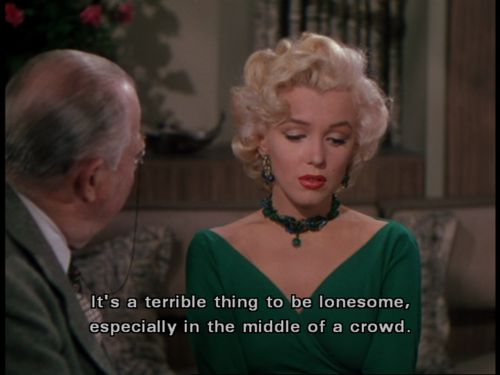
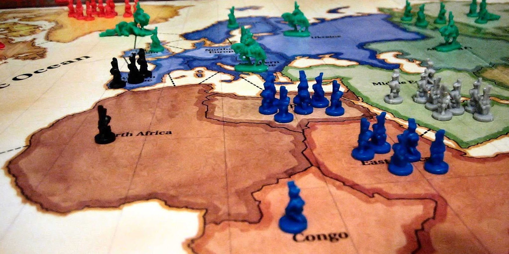

Deadly Sins in Game Design
This post is from early-2016 and is taken from a now-dead blog.
I get sent a fair number of Kickstarter games in the mail for review. And while I love the idea of Kickstarter as a platform - it sure does produce a lot of terrible games! So I've put together some of the issues that I find prevalent in bad games, crowd-sourced or otherwise. These are things that, quite frankly, drive me crazy when I see them. I've provided examples of how I tried to avoid these issues in my own games, not to suggest that I don't ever fall foul of any of these issues, but just to examine them in a practical way.
1. Too much Downtime
I find that excessive downtime absolutely kills my enjoyment of a game, more than almost any other feature. There is little worse than the kind of game that makes you wait ten minutes for your next turn with nothing to do than watch your opponents. Even worse if what your opponents are doing has no effect on you. That's ten minutes of no-games, in time you have specifically made for games.
Classically, the worst offenders of this are games that feature player elimination, but at least in many of those games you can leave the table. Last year I played a dice game that had each player do a push-your-luck mini-game before each round to determine their upcoming resources. It could take two minutes per player and there were up to eight players. A potential fourteen minutes of twiddling thumbs. Horrifying.
Games like King of Tokyo handle downtime well. Even when it's not your turn, you are affected by the active player. And once you are eliminated from the game, it is typically nearing it's end, at which point you will be more than happy to laugh at other players getting beaten up.
My own example
One of the things which I most happy about with Movable Type is that there is no real downtime for players. The drafting mechanic means that players take their turns simultaneously and the scoring works in such a way that you don't know if you are out of the running until the very end - everybody is always in the game.
2. No Player Interaction
Boardgames are a social medium. You get together with your friends, get a game out, and expect to play it together. Subsequently, I usually go a little mad at games that are in reality "multiplayer solitaire". This might prove an unpopular opinion because some large offenders of this are very popular games. In such games, you may influence one another to a degree, but you can also play without ever looking up from your own player board. Other offenders might include many push-your-luck games like Zombie Dice.
There should be something that you can do to effect opponents. Players should have at least some investment in what their opponents are doing, other than just concerning themselves wit what the end score will be.
My own example
When designing Director's Cut: The Card Game , I made the decision to limit the game to two players, even though it can be played with more, because high player counts really messed with player interactions. In Director's Cut, players take cards from a market of five cards, which is refreshed at the end of each player's turn. With two players, you need to watch what cards your opponent is collecting and try to snatch the cards they need before they get a chance. They, in turn, will do the same to you. But with three players, you can only really affect the player to your left, and likewise, the player to your right can only affect you. Very uncool. So I nixed the three-player version. I might not have been right in this decision though - plenty of playtesters told me I was worrying needlessly.
3. Runaway Leader
The game where once a player gets into the lead, they can never be unseated. They get first pick of resources, they get bonus resources, and they build impenetrable fortresses, And everyone else just suffers, trying for second place or just attempting suicide strikes. You can think of Risk as a classic example of runaway leader problems.
Most games that award points or resources depending on player position can have this problem - though it can be mitigated and well handled. If the runaway leader position is attained through skill, then that's cool, but once somebody gets into the position of runaway leader, the game should be close to finishing.
Runaway leaders can be very reasonable sometimes. I'm a big fan of Netrunner and have played plenty of games where I have fell so far behind that I can never hope to stop the other player. And that's my own fault - I shouldn't be granted a magic catch-up card just because I suck.
A clever response is to slightly penalise the leader. Power Grid does this to great effect. If you're in first place, you're closest to winning, but will always get last choice from the resource market, meaning you have to buy at higher prices and other players are always sneaking up on you.
My own example
Director's Cut actually does have a runaway leader, players get cash for finishing scripts and then use the cash to buy cast and crew to make even more money! The runaway leader is combated by making the money also count as the victory condition - if you leverage your good financial position to buy loads of cast and crew, you may actually just hurt your chances of winning. Additionally, no matter how rich or poor you are, there is always some crew that you can hire for free and the movies themselves don't cost a penny to make - thus, players should never feel totally helpless.
4. Uninteresting Decisions
These are the kind of games that you can play on autopilot. Decisions are available, but the consequences are small, too obvious, or uninteresting. The best example of this would be something like Monopoly, where your biggest decisions, for the most part, are buy a property or don't buy a property. There are offenders in designer games too - this is one of the main reasons why I traded away my copy of the (widely liked) Sentinels of the Multiverse.
5. Unnecessary Mechanisms
That game that just has extra crap stuck to it, because it's cool. Whether it's games that just want an excuse for custom dice, or games that have to stick assymetric player abilities on an already fine mechanic. The mechanics should serve a distinct purpose in the gameplay, and not just be there to fill a gap.
My own example
In one of my first designs, for a space-based take-that card game, whenever I encountered a problem, I just kept adding more and more patches and features. I thought, wouldn't it be great if eliminated players could come back as ghosts and mess with the surviving players! No. It wasn't great. It was horrible and messy and most of all, confusing and pointless.

6. It takes too Long!
This is particularly true when you have games that feature a lot of randomness - if you couple that with a long play-time, then I'll likely fall asleep. Many good games have a distinct end point (maybe it's the number of rounds or when a draw pile is empty) or a distinct sense of inertia that builds up, so the ending is within sight.
7. Unwieldy Instructions
Bad instructions are horrible! They make that first playthrough of a game such a chore - particularly when you realise, after a hour, that you've been making huge rule mistakes. But this is a sin that can be remedied so easily: use blind playtesters and get an editor!
A blind playtester is a playester who plays the game based only on the rulebook - not having been taught the game by other people. They are the simplest way to see if your rulebook is up to scratch and they may surprise you with the issues that they discover. Editors will usually look at the structure and language of your rulebook, and as far as I'm concerned, they are invaluable. I worked as an English teacher and writing coach for five years, yet I still find tons of errors in my own work. This isn't because I'm a bad writer, but because, like everyone, I need a second opinion.
8. Lack of Accessibility
There are too many games out there that do not accommodate for the needs of players with accessibility issues. One very prolific and easy to fix issues is choosing colours that are suitable for colourblind players. 1 in 10 men have a degree of colourblindness, so for a game not to address this is utter madness. I recently played the otherwise excellent game, Broom Service, which uses the colours, purple, orange and green for it's potions and towers. Two of the players were colourblind and we were utterly frustrated. We could exercise no subtlety in our plans as we had to keep on asking neighbours, "What colour is this tower?" Other offenders have included Race/Roll for the Galaxy and classics like Carcassonne (red and green meeples...). Choose colours wisely and use patterns and symbols.
Other accessibility issues that should be considered and addressed include size of text and choice of font for those with vision difficulty and size of components for those with motor issues. Obviously, some of the solutions are more practical than others, depending on the kind of game being made.